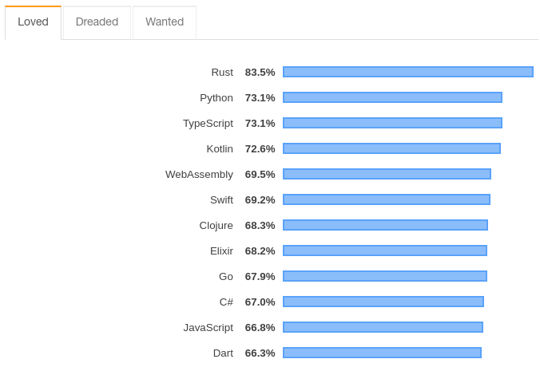
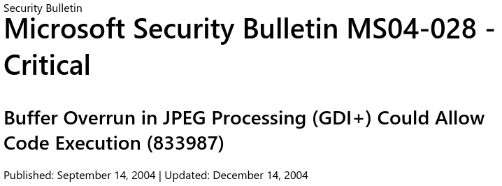

«Serialization»
C2AB 53 65 72 69 61 6C 69 7A 61 74 69 6F 6E C2BB
Selection Criteria
General Health

Martin Weiner
Language Support
StackOverflow 2019 Survey
Types
import json
from datetime import datetime
json.dumps(datetime.now())
# ...
# TypeError: Object of type datetime is not JSON serializable
nums = (1, 2, 3)
print(json.loads(json.dumps(nums)))
# [1, 2, 3]Schema
DATE SNOW TMAX TMIN PGTM 2000-01-01 0 100 11 1337 2000-01-02 0 156 61 2313 2000-01-03 0 178 106 320 2000-01-04 0 156 78 1819 2000-01-05 0 83 -17 843 2000-07-16 8 312 245 937
Performance

spurious correlations
Security
Streaming
Nathan Anderson
Standard Library

https://xkcd.com/1987/
Formats
pickle
marshal
shelve
JSON
{
"symbol": "BRK-A",
"volume": 1,
"price": 321801.07,
"buy": true
}YAML
symbol: "BRK-A"
volume: 1
price: 321801.07
buy: trueTOML
symbol = "BRK-A"
volume = 1
price = 321801.07
buy = trueXML
<?xml version="1.0"?>
<trade>
<symbol>BRK-A</symbol>
<price>321801.07</price>
<volume>1</volume>
<buy>true</buy>
</trade>CSV
symbol,volume,price,buy
BRK-A,1,321801.07,truemsgpack
BSON
protobuf
syntax = "proto3";
package pb;
message Trade {
string symbol = 1;
int64 volume = 2;
double price = 3;
bool buy = 4;
}flatbuffers
capnproto
SQL
from sqlalchemy import Boolean, Column, Float, Integer, String
from sqlalchemy.ext.declarative import declarative_base
Base = declarative_base()
class Trade(Base):
__tablename__ = 'trades'
id = Column(Integer, primary_key=True)
symbol = Column(String)
volume = Column(Integer)
price = Column(Float)
buy = Column(Boolean)parquet
orc
HDF5
...
Invent Your Own

https://http.cat/406

@mweststrate
__repr__
from dataclasses import dataclass
@dataclass
class Trade:
symbol: str
volume: int
price: float
buy: bool
t = Trade('BRK-A', 1, 321801.07, True)
print(f'{t!r}')
# Trade(symbol='BRK-A', volume=1, price=321801.07, buy=True)Python
import sys
max_sockets = 100 if sys.platform == 'win32' else 1000
port = 9021
auth_servers = [
'auth1.local',
'auth2.local',
]
del sys # Cleanupdef load_config(filename):
"""Load configuration from Python file"""
with open(filename) as fp:
code = fp.read()
cfg = {}
exec(code, None, cfg)
return cfgSerialization
______
< fork >
------
\ ^__^
\ (oo)\_______
(__)\ )\/\
||----w |
|| ||
Copy-on-write finds its main use in sharing the virtual memory of operating system processes, in the implementation of the fork system call. Typically, the process does not modify any memory and immediately executes a new process, replacing the address space entirely. Thus, it would be wasteful to copy all of the process's memory during a fork, and instead the copy-on-write technique is used.
def spawn(func, data):
"""Spawn a child process which run func on data"""
rdr, wtr = os.pipe()
rdr, wtr = os.fdopen(rdr, 'rb'), os.fdopen(wtr, 'wb')
pid = os.fork()
if pid: # parent
return pid, rdr
# child
pickle.dump(func(data), wtr)
wtr.close()
raise SystemExitdef wait(child):
"""Wait for child to finish, load data from pipe"""
pid, fp = child
with fp:
os.waitpid(pid, os.P_WAIT)
return pickle.load(fp)def pmap(func, items):
"""Parallel map (using fork) of func over items
>>> pmap(lambda x: x * 2, range(5))
[0, 2, 4, 6, 8]
"""
children = [spawn(func, item) for item in items]
return [wait(child) for child in children]Thank You